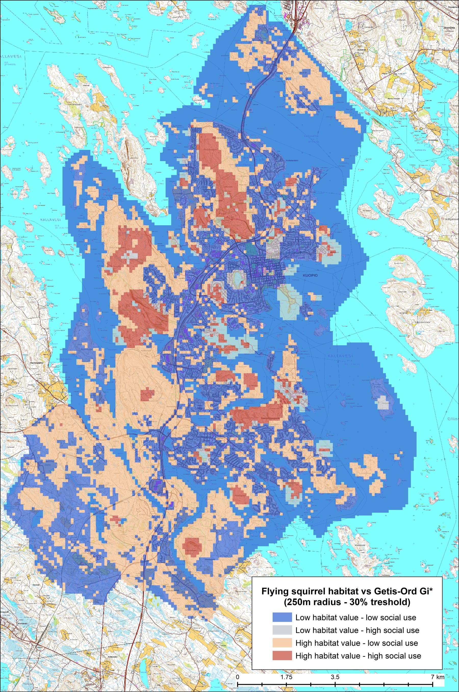

Spatial and Statistical Analysis using ArcGIS, R, and Public Participation GIS
 As a spatial analyst, I have had the opportunity to work on a range of professional projects that have helped me hone my technical and conceptual skills. One such project involved using ArcGIS desktop for spatial data analysis and R for statistical analysis to determine the conflict between social use areas and flying squirrel habitats.
The project was challenging, as it required a series of spatial data analysis tools to obtain the spatial relationship between the conflicting factors in three different municipalities. Spatial interpolation methods such as Getis-Ord and Kernel density were used, and the results were compared across multiple scales. The project also involved statistical methods such as phi coefficient and Bhattacharyya distance to verify the results.
What made this project particularly unique was the use of public participation GIS (PPGIS) for data gathering. PPGIS involves engaging stakeholders in the data gathering process, providing valuable insights into the complex problems that arise when managing natural resources. In this case, the engagement of stakeholders helped provide critical data about the use of social areas, which were then analyzed using spatial tools to determine the spatial relationship between social areas and flying squirrel habitats.
As a spatial analyst, I have had the opportunity to work on a range of professional projects that have helped me hone my technical and conceptual skills. One such project involved using ArcGIS desktop for spatial data analysis and R for statistical analysis to determine the conflict between social use areas and flying squirrel habitats.
The project was challenging, as it required a series of spatial data analysis tools to obtain the spatial relationship between the conflicting factors in three different municipalities. Spatial interpolation methods such as Getis-Ord and Kernel density were used, and the results were compared across multiple scales. The project also involved statistical methods such as phi coefficient and Bhattacharyya distance to verify the results.
What made this project particularly unique was the use of public participation GIS (PPGIS) for data gathering. PPGIS involves engaging stakeholders in the data gathering process, providing valuable insights into the complex problems that arise when managing natural resources. In this case, the engagement of stakeholders helped provide critical data about the use of social areas, which were then analyzed using spatial tools to determine the spatial relationship between social areas and flying squirrel habitats.

To learn more about this project visit LUKE's official project place by clicking on this link.